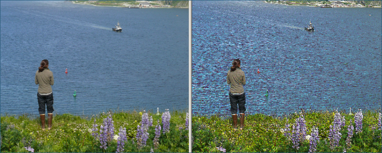

The Shadow effect adds shadows to a photo, highlighting the edges. You can specify the
threshold and shadow angle. The threshold is the amount of the difference between light and
dark colors along an edge required to cause a shadow. A larger threshold results in fewer, more
pronounced shadows.
